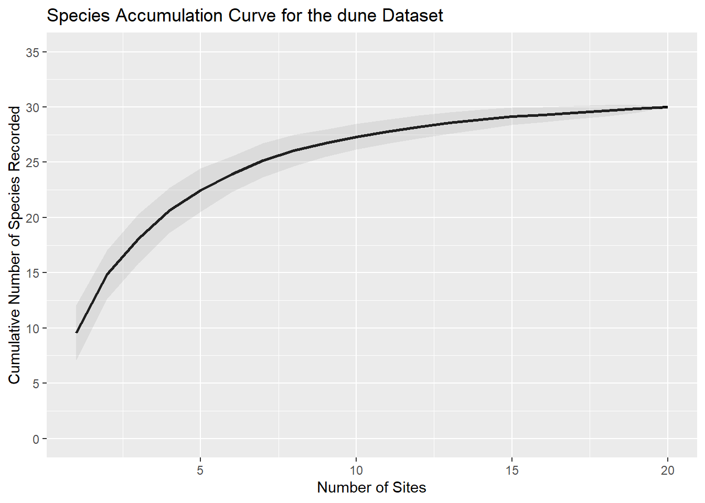

Calculating and Visualizing Species Accumulation Curves in R
Introduction
Species accumulation curves (SACs) are a fundamental tool in ecology for assessing species richness and sampling effort. They plot the cumulative number of species observed against the number of samples or individuals collected, providing insights into how well a community has been sampled (Gotelli & Colwell, 2001).
SACs are based on the principle that as more samples are collected, the likelihood of encountering new species decreases. The shape of the curve can indicate whether additional sampling is likely to yield new species or if the community has been sufficiently sampled (Chao et al., 2014). SACs are particularly useful for comparing biodiversity across different sites or evaluating the adequacy of sampling efforts (Colwell & Coddington, 1994).
In this blog post, we will demonstrate how to calculate and visualize species accumulation curves using the dune dataset from the BiodiversityR package in R (Kindt and Coe, 2005).
Load required packages
Before we start, we need to load a handful of R packages that will allow us to perform these calculations.
# Load required packages
if (!require("pacman"))
install.packages("pacman")Loading required package: pacmanpacman::p_load(
vegan, # Calculate species accumulation curves
BiodiversityR, # `dune` data
ggplot2, # Plotting
dplyr # Data cleaning and manipulation
)Explore the dune data
The dune data set contains vegetation data from 20 sites in the Dutch dunes (Batterink and Wijffels (1982). Each row represents a site, and each column represents a species. Column names are an abbreviated eight character name for each plant species sampled, e.g. Agrostol is abbreviated from Agrostis stolonifera.
Let’s take a look at the data:
data(dune)
head(dune) Achimill Agrostol Airaprae Alopgeni Anthodor Bellpere Bromhord Chenalbu
1 1 0 0 0 0 0 0 0
2 3 0 0 2 0 3 4 0
3 0 4 0 7 0 2 0 0
4 0 8 0 2 0 2 3 0
5 2 0 0 0 4 2 2 0
6 2 0 0 0 3 0 0 0
Cirsarve Comapalu Eleopalu Elymrepe Empenigr Hyporadi Juncarti Juncbufo
1 0 0 0 4 0 0 0 0
2 0 0 0 4 0 0 0 0
3 0 0 0 4 0 0 0 0
4 2 0 0 4 0 0 0 0
5 0 0 0 4 0 0 0 0
6 0 0 0 0 0 0 0 0
Lolipere Planlanc Poaprat Poatriv Ranuflam Rumeacet Sagiproc Salirepe
1 7 0 4 2 0 0 0 0
2 5 0 4 7 0 0 0 0
3 6 0 5 6 0 0 0 0
4 5 0 4 5 0 0 5 0
5 2 5 2 6 0 5 0 0
6 6 5 3 4 0 6 0 0
Scorautu Trifprat Trifrepe Vicilath Bracruta Callcusp
1 0 0 0 0 0 0
2 5 0 5 0 0 0
3 2 0 2 0 2 0
4 2 0 1 0 2 0
5 3 2 2 0 2 0
6 3 5 5 0 6 0Calculate Species Accumulation Curves (SACs)
We will use the specaccum() function from the vegan R package (Oksanen et al., 2024) to calculate the species accumulation curve. By default, this function uses the “exact” method, which is suitable for small datasets. Here, we are rather going to use the “random” method, which adds the sites in a random order in different permutations of the SAC calculation.
# Calculate species accumulation curve
sac <- vegan::specaccum(
dune,
method = "random",
permutations = 100
)We have calculated our species accumulation curves. However, to visualise these curves, we need to convert the results into a data.frame object for plotting.
# Convert results to a data frame for plotting
sac_df <- data.frame(
sites = sac$sites,
species = sac$richness,
sd = sac$sd
)
head(sac_df) sites species sd
1 1 9.58 2.474843
2 2 14.86 2.215738
3 3 18.10 2.213366
4 4 20.66 2.021201
5 5 22.48 1.956497
6 6 23.92 1.612326Plot SACs
We can now plot our species accumulation curve for the dune data. This graph shows observed species richness (typically referred to as S in the literature), and indicated by the species column in sac_df, against sampling effort on the x-axis, which in this study was the number of sites where sampling was performed (indicated by the sites column in sac_df).
# Plot SAC
ggplot(
data = sac_df,
aes(
x = sites,
y = species
)
) +
# Add mean expectation line
geom_line(color = "black", linewidth = 1) +
# Add 95% confidence interval (95% CI)
geom_ribbon(
aes(
ymin = species - sd,
ymax = species + sd
),
alpha = 0.2,
fill = "grey60"
) +
# Add better y-axis
scale_y_continuous(
limits = c(0, 35),
breaks = seq(0, 35, 5)
) +
# Add plot labels
labs(
title = "Species Accumulation Curve for the dune Dataset",
x = "Number of Sites",
y = "Cumulative Number of Species Recorded"
) 
The SAC shows that as more sites are sampled, the number of new species added decreases, indicating that the sampling effort is approaching the total species richness of the community. The shaded area represents the standard deviation, providing an estimate of the uncertainty around the curve.
Conclusion
Species accumulation curves are a powerful tool for assessing biodiversity and sampling adequacy. By using the vegan package in R, we can easily calculate and visualize these curves, as demonstrated with the dune dataset. In the next blogpost, we will explore how to automate the calculation of SACs across multiple different groups (e.g. plot individual SACs per control versus treatment sites).
References
Batterink M. & Wijffels G. (1983). Een vergelijkend vegetatiekundig onderzoek naar de typologie en invloeden van het beheer van 1973 tot 1982 in de duinweilanden op Terschelling. Report Agricultural University, Department of Vegetation Science, Plant Ecology and Weed Science, Wageningen.
Colwell, R. K., & Coddington, J. A. (1994). Estimating terrestrial biodiversity through extrapolation. Philosophical Transactions of the Royal Society of London. Series B: Biological Sciences, 345(1311), 101-118.
Gotelli, N. J., & Colwell, R. K. (2001). Quantifying biodiversity: Procedures and pitfalls in the measurement and comparison of species richness. Ecology Letters, 4(4), 379-391.
Kindt, R., & Coe, R. (2005). Tree diversity analysis. A manual and software for common statistical methods for ecological and biodiversity studies. World Agroforestry Centre (ICRAF). ISBN 92-9059-179-X, http://www.worldagroforestry.org/output/tree-diversity-analysis.
Oksanen, J., Simpson, G., Blanchet, F., et al. & Weedon, J. (2024). vegan: community ecology package. R package version 2.6-8. https://CRAN.R-project.org/package=vegan